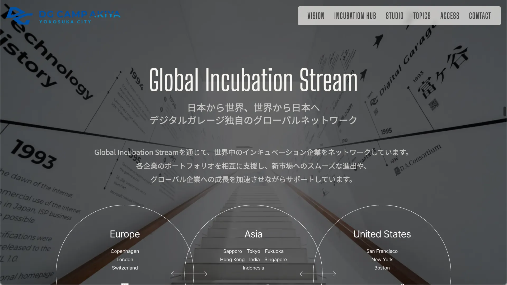
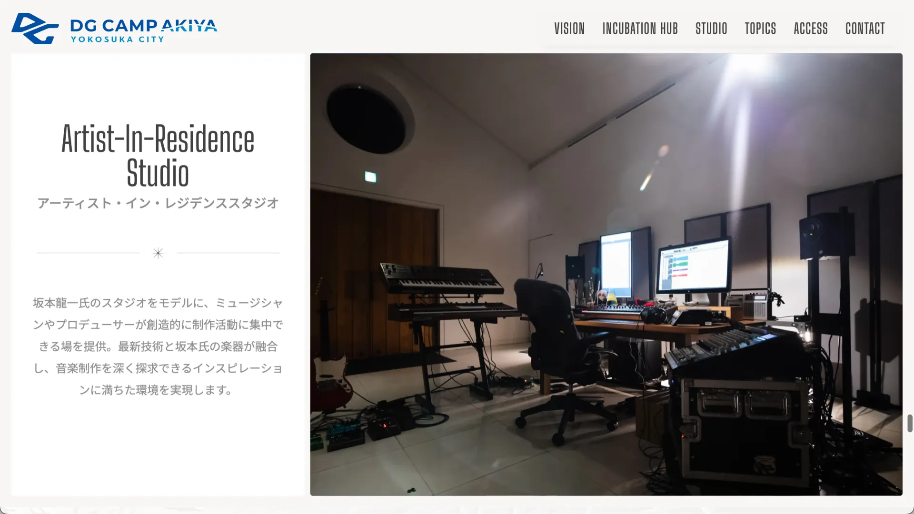

DG Camp Akiya
クリエイティブディレクション & フロントエンド開発
DG Camp Akiyaは横須賀にオープンしたインキュベーションセンター。Digital Garage関連企業やアクセラレータースタートアップ、グローバルパートナーが集まり、コワーキング・イベント・交流の場として機能しています。ロゴ、いくつかの資料、そしてオープンなブリーフを受け取り、コンセプト・タグライン・撮影ディレクション・ドローン映像・モーション言語まで、すべてをそこから作り上げました。
背景
DG Camp Akiyaは横須賀にオープンしたインキュベーションセンターです。Digital Garage関連企業やアクセラレータースタートアップ、グローバルパートナーが集まり、コワーキング・イベント・交流を行うためのフルリノベーションスペース。プロジェクトはミーティングから始まりました。スペースを案内してもらい、ロゴと資料を渡されました。そこから先は、コンセプト・ナラティブ・サイト全体の表現をゼロから定義する自由がありました。国会議員、横須賀市長、渋谷区長からのメッセージが届いた、注目度の高いローンチでした。
方向性
横須賀は海沿いに位置しています。このスペースはグローバルな視野を持ちながら、ローカルな拠点で働くスタートアップのために設計されています。そのテンション——ローカルな根と、グローバルな広がり——がクリエイティブの軸になりました。タグラインを書きました：think globally, work locally。そこからすべてが続きました。
ビジュアル言語には、動きと生命感が必要でした。スペースが育てるスタートアップのエネルギーと成長を体現するもの。スクロールに合わせて要素がスケールするアニメーションは、モメンタムをテーマにしたスペースに合っていると感じました。以前から温めていたリファレンスがあり、このプロジェクトで試す機会になりました。
主な判断
ブリーフを超えて、サイトを形づくった5つの判断があります。
01. ドローンショットのコンセプト ドローンが会議室の内側から始まり、海の上へと引いていく映像をディレクションしました。単なるエスタブリッシングショットではなく、タグラインをビジュアル化したものです。この部屋で働くスタートアップが、海を見渡し、日本を超えたマーケットとつながっている。コンセプトと映像は同時に書かれました。どちらも即座に承認されました。
02. ブリーフの拡張 スコープに対するクリエイティブな自由があったため、ストーリーを完結させるために必要なものを追加しました。ビジョンを伝えるコンセプトセクション、施設がDigital Garageのグローバルインキュベーションネットワーク内でどう位置づけられるかを説明するAboutセクション、そして今後の計画を紹介するトピックスセクション。各イニシアティブの詳細をチームとともに整理し、ビジュアルを収集して、3枚のカードにまとめました：サイバーセキュリティハブ、横須賀市との連携、坂本龍一アーティスト・イン・レジデンス・スタジオ。
03. ギャラリーにエディトリアルラベルを 物件写真をニュートラルなグリッドで並べるのではなく、Dream・Create・Colab・Inspireの4つのエディトリアルカテゴリに整理し、それぞれに独自の画像セットを用意しました。フォトグラファーに対してセクションごとにブリーフィングを行いました。このラベル構造により、ギャラリーに「このスペースが何のためにあるか」を体現するナラティブの流れが生まれました。
04. 神奈川の波のリファレンス アクセスセクションに、横須賀が属する神奈川の波の芸術的伝統を参照したビジュアル処理を加えました。装飾のためではなく、サイトをローカルに根ざすための静かな文化的ノードです。
05. 坂本スタジオの表現 アーティスト・イン・レジデンス・スタジオは、坂本龍一のレガシー楽器とスタジオ機材を中心に構築されています。コンテンツは提供されました。提示するにあたっては丁寧な扱いが求められました——そのレガシーを尊重するほど重みを持たせながら、施設自体を霞ませないよう抑制すること。
デザイン
サイトはドローン映像のヒーローとタグラインから始まります——海を見る前に説明は必要ありません。ギャラリーがすぐに続き、現地でディレクションした写真がスペース自体を語ります。ビジョン・ハブ・スタジオのセクションが段階的にストーリーを積み上げます：このスペースが何であるか、グローバルネットワーク内でどう位置づけられるか、そして何が文化的に特徴的かを。
スクロールに合わせて画像とテキストが拡大・縮小するモーション言語がサイト全体を貫いており、ページにエネルギーの感覚を与えます。各セクションがスクロールとともに現れる、ダイナミックで表現力豊かな構造です。
開発
Vite、Tailwind CSS、GSAP、Lenis、バニラJSで構築——モーション重視のシングルページサイトで使い慣れたスタックです。GSAPがスクロールに連動したスケールアニメーション全体を担当しています。Lenisがスクロールの挙動を滑らかに保ちます。フレームワークのオーバーヘッドなし——すべてのインタラクションを完全にコントロールしています。
成果
サイトは施設のオープニングと同時にローンチし、主要な告知の場となりました。ドローン映像とタグラインは修正なしで採用されました。元のブリーフには含まれていなかったコンセプト・About・トピックスの各セクションが、施設を外部に伝えるコミュニケーションの中心的な要素になりました。
振り返り
使用したモーションデザインのリファレンスは、適切なプロジェクトのために取っておいたものです。スタイルはプロジェクトよりも先に決まっていました。振り返ってみると、逆のアプローチが正解だったと思います——コンテンツがモーション言語を定義するべきであり、参照を先に持ち込むべきではない。スケールアニメーションはここでうまく機能していますが、それは半分は偶然の一致でした。

